|
Thread Control
The standard method of synchronous threads is
an environment without control. There is no control over the number of threads
started, the priority of request processing and the clearing, reallocating and purging of
stalled requests.
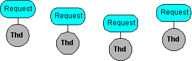
Tymeac™ is the solution.
-
Tymeac™ analyzes four thresholds providing almost
unlimited control for the new thread algorithm. [ example
]
-
Prioritized queues provide the means to properly schedule requests and to assure users
that the "hot" request gets immediate attention. [ example
]
-
Optional timing of requests provides immediate notification of an abnormal event. [ example ]
-
Optional asynchronous processing provides for the "background" processing
necessary in Enterprise environments. [ example ]
-
Automatic back out provides for intermediate component failure. [ example ]
-
A Monitor thread thoroughly examines the system at set intervals reallocating and
freeing resources, and, notifying the user’s early warning system of potential
problems.
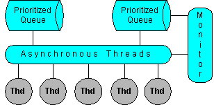
Reduced Processor Overhead
With Tymeac™,
you pre-define your asynchronous processing environment (queues and threads) then activate
it with a remote/non-remote method call. The environment remains active only as long
as necessary. Tymeac™ creates threads only when necessary
and destroys those threads according to user requirements. This reduces the overall
storage footprint and diminishes the machine cycles necessary to manage threads. [ example ]
Tymeac™ stacks requests for processing
in Wait Lists when no thread is immediately available to process them. When
asynchronous threads finish processing a request, they look in the Wait Lists for the next
request. This reduces machine overhead by controlling the number of competing threads and letting each thread process multiple
requests between a start/stop sequence. [ example ]
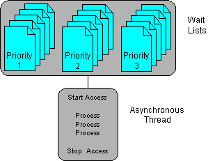
Scalability
How many threads does a logical process need? The answer depends on
the number of outstanding requests (load). The higher the load, the more threads may be
needed to process requests.
Tymeac™ provides four thresholds to give
designers control over this parameter. Tymeac™ only creates
a new thread when a threshold is met and destroys the thread after an idle period -- a
dynamic response to an ever changing environment. [ example
]
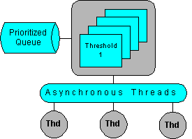
Facilitated Recursion Processing
Asynchronous processes are a means
to isolate functions.
However, when the asynchronous process itself requires another
asynchronous process, the effort required in keeping track of allocated storage, time-out,
back out, etc., means that designers usually chose some other, less efficient method.
Tymeac™ is the solution to the nested
processing problem. The Tymeac™ management facility
makes nested processing another option available to the system designer. [ example ]
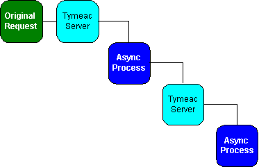
[Not familiar with recursion? See an example.]
Simplified Application Development
The most successful computer programs are
those that follow the Bauhaus principle; they are simple and tailored to specific, well
defined tasks.
Tymeac™
supports the construction of simple, single process objects. These objects run
under the control of Tymeac™. The object gets the
input message from Tymeac™, executes the process, and
returns the output message back to Tymeac™.
The design, construction, and testing of objects in a
vacuum simplifies the entire process. Since Tymeac™
allows objects to execute as separate threads, the vacuum development environment reflects
the real world environment.
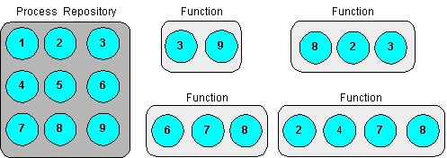
Failure Containment
Asynchronous queue processing is a method of planning for a sequence of
events (the flux of events and processes.) The failure of one or more of those
processes is part of the plan.
Tymeac™ provides the means to
isolate the failure.
The executing thread in each associated queue of the request may issue
roll backs or even terminate without affecting the requesting Client. Each queue is
in isolation, and has no affect on other queues or threads.
Event planning may take on a binary design. Did the process
complete as planned, yes or no. There is no need to handle every possibility in
relation to every other possibility. Asynchronous queues and threads handle their
own environment.
Simple, straightforward and fault tolerant. [ example ]
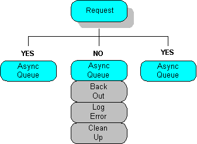
The Web Service Solution
A major problem with Web Services (Jini™
and eventually UDDI) is that the application proxy of the Service represents an
asynchronous process, (backend, [activatable] remote/non-remote object.)
The client passes a request to the application and receives
a reply. However, all the problems of any
asynchronous process are applicable.
In addition, to be truly effective and to support load
balancing, the application should support Queuing and separate multi-threading within each
Queue. However, this introduces a completely new set of problems:
- The queues must be dynamically changeable.
- There must be a "thread limit" to prevent thread overload on the JVM.
- Threads must be managed to detect and recover from stalls.
- There must be a standard way to monitor the entire environment, to notify administrators
of problems, to gather statistics for tuning and to view (GUI) the real-time system.
When one uses asynchronous processes, one must also have an
asynchronous process manager.
Tymeac™ is
that asynchronous process manager.
An asynchronous process must be able to handle:
- The autonomous request with callback.
- Recursion processing (when a request needs a new process itself.)
- Intermediate back-out when encountering scheduling problems.
- Status requests for the current and prior requests.
- Congestion reports.
- The ability to change parameters.
- Deactivation during inactive periods.
Reduced Response Times
Today’s software does not need construction by gurus to take
advantage of today’s computer.
The requirement is for modularized, functionally isolated code so that
the hardware can function as designed.
Tymeac™ breaks up the request into
concurrently active queues and threads enabling parallel processing to significantly
reduce the response time. [ example ]
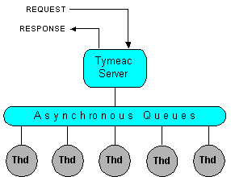
Separately Tunable JVM
Tymeac™ RMI
Server runs in its own Java™ Virtual Machine, separate from
your application Client, Data Base Management System, Jini™
Service or other middle tier layer.
This advantage lets you:
- Use separate security property and/or classpath options.
- Personnel may quickly move the JVM to the most advantageous machine when needed.
- Personnel may add a debugging interface or profiling option.
- Personnel may change memory allocation or other non-standard start up options.
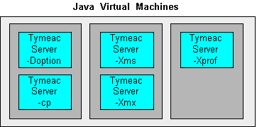
Gateway to Distributed Computing
Tymeac™
separates complex requests into component processes. Each component process executes
as a separate logical process. The communication and database interface
dependencies normally found in large, multi-function processes do not exist.
Not only are the asynchronous threads able to execute
concurrently, the component applications may interface with any network, legacy
application, message queuing facility, or database protocol without restraint to each
other or the requester. [ example ]
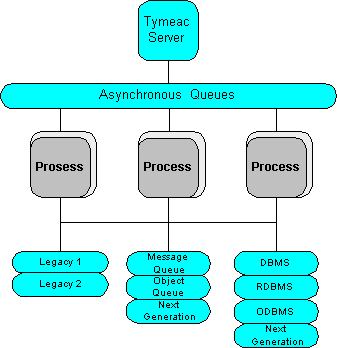
Ability to Multi-Process
Today’s machines are infinitely more
complex than yesterday's and require an inversely proportional base of knowledge for
application development with Tymeac™.
Tymeac™ lets the operating
system, Java™, and access methods
schedule, monitor and control the use of resources by separating complex requests into
component threads.
The application developer codes the method without concern
for the execution environment.
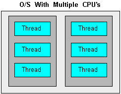
|